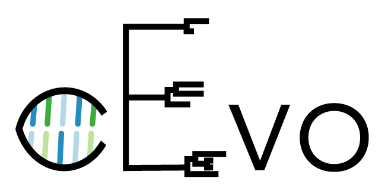
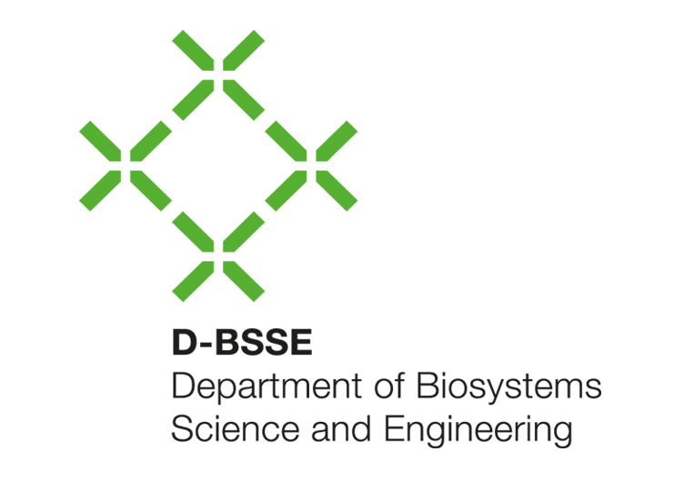

<section class="titlepage">
  <div class="title">
    Analyzing Structured Populations using BEAST 2
  </div>

  <div class="authors">Tim Vaughan</div>
  <div class="institution">Stadler Group, D-BSSE, ETH Z&uuml;rich</div>
  <div class="date">
    Český Krumlov Workshop on Population and Speciation Genomics<br>
    24<sup>th</sup> January, 2018</div>

  
  
  
</section>

<!--
    
    * Defining population structure

-->
